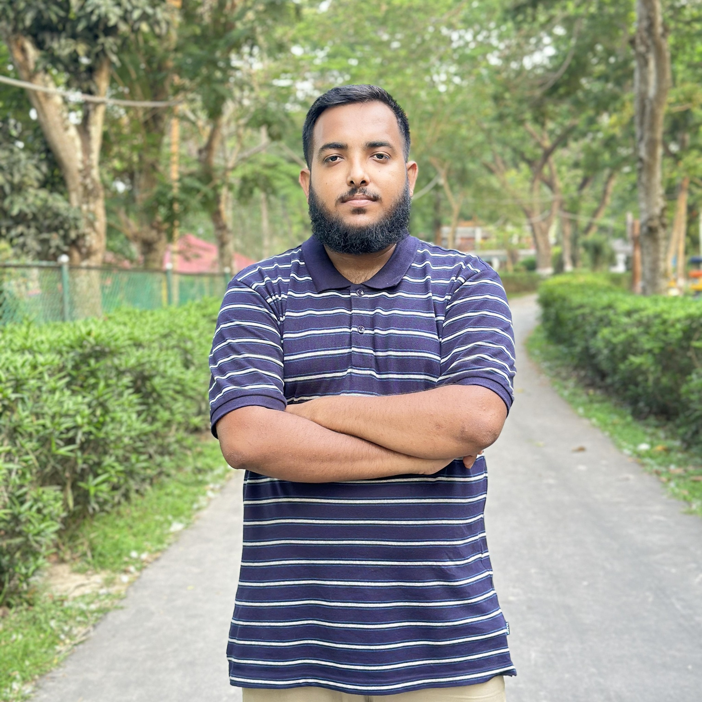
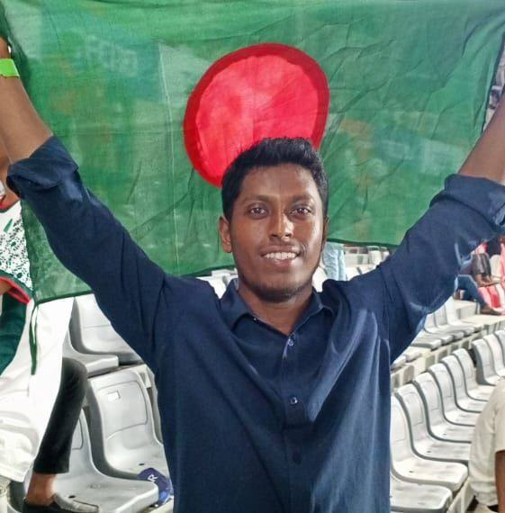
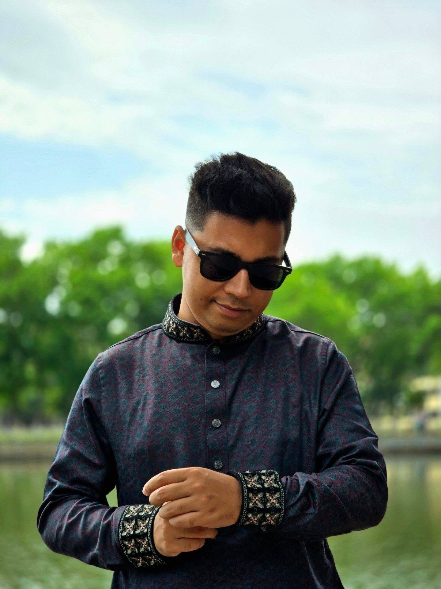
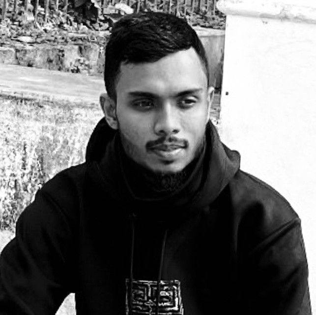
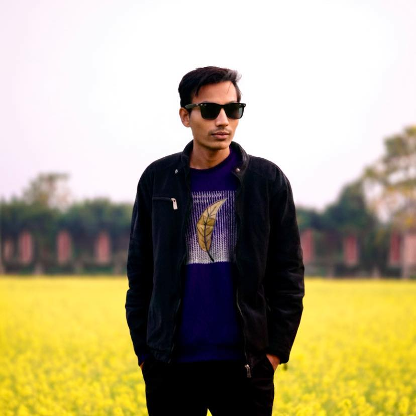
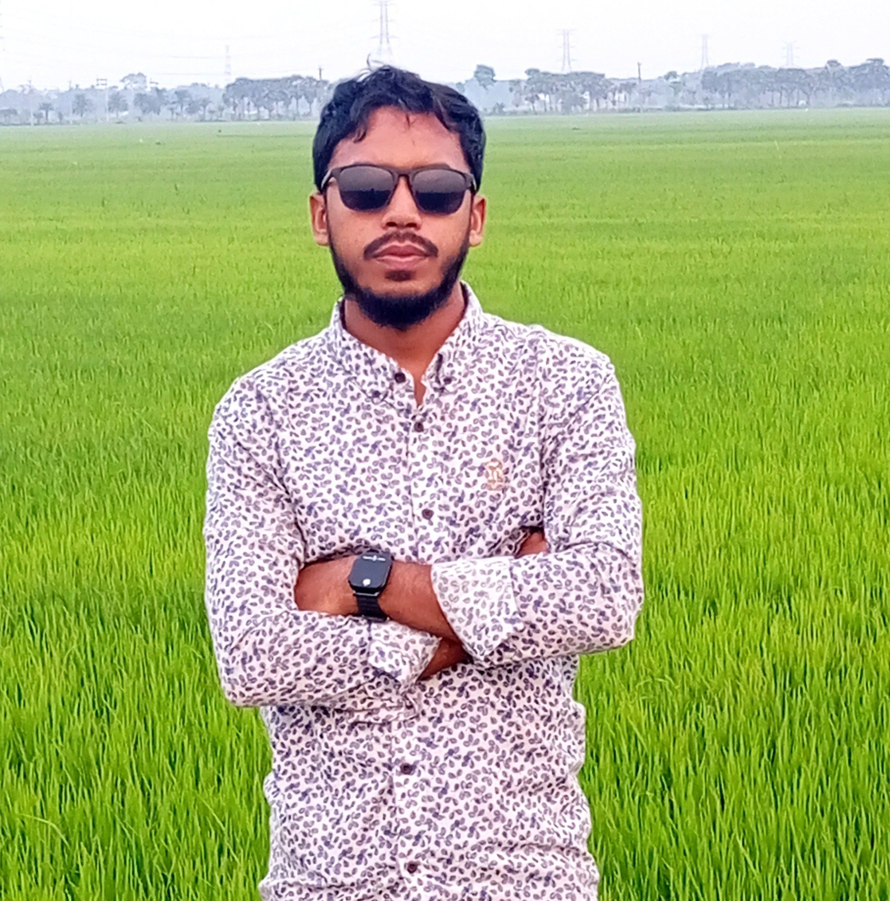

Personal Story
I am Tazim, a person with dreams, responsibilities, emotions, and ambition. আমি চেষ্টা করি প্রতিদিন একটু ভালো হতে.
Personal digital diary
আমি নিজের জীবনটা সুন্দরভাবে গড়তে চাই. Every day I am learning, improving, working, and moving closer to a better future.
About me
I am Tazim, a person with dreams, responsibilities, emotions, and ambition. আমি চেষ্টা করি প্রতিদিন একটু ভালো হতে.
I work at Bismillah Auto Jashore and continue my Masters in Accounting. কাজ, পড়াশোনা, আর web development একসাথে নিয়ে এগিয়ে যাচ্ছি.
I want a confident life: financial freedom, good habits, strong skills, and a lifestyle that feels peaceful and premium.
Education & Work Journey
My journey is about study, responsibility, struggle, skill learning, and dreams. From school life in Jashore to Accounting studies and work at Bismillah Auto, I am growing every year with patience and purpose.
Here my student life started with discipline, curiosity, and the first dreams of becoming someone better.
This stage taught me confidence, friendship, pressure, and the value of continuing even when life feels difficult.
College opened a bigger world for me. I started understanding responsibility, future planning, and real-life competition.
Accounting gave me a practical mindset: money, business, discipline, records, and the logic behind financial life.
I am currently studying Accounting at Govt. M.M. College, carrying my education forward while preparing for a stronger future.
I joined Bismillah Auto Jashore in October 2020. I still work there, learning real-life responsibility, patience, customer handling, and work discipline.
Alongside work and study, I am learning web development to build a better future. আমার স্বপ্ন হলো skill দিয়ে নিজের জীবন বদলানো.
Skills
Daily routine
Fresh start, planning, prayer, positive mindset.
Focus, responsibility, communication, earning experience.
Practice web design, accounting, marketing, and English.
Quiet learning, dreams review, and preparing for tomorrow.
Dreams & goals
Friends Circle Gallery






Friends Circle
জীবনের পথে কিছু মানুষ শুধু বন্ধু নয়, তারা শক্তি, সাহস আর সুন্দর স্মৃতির অংশ। আমার বন্ধুদের সাথে কাটানো মুহূর্তগুলো আমার জীবনের সবচেয়ে মূল্যবান অধ্যায়ের একটি।
“TAZIM এমন একজন মানুষ, যে নিজের স্বপ্নের জন্য চুপচাপ পরিশ্রম করে যায়। বন্ধুত্বে সে আন্তরিক, কাজে দায়িত্বশীল, আর ভবিষ্যৎ নিয়ে সবসময় সিরিয়াস।”
“তার মধ্যে শেখার আগ্রহ, নিজের জীবন গুছানোর চেষ্টা, আর পরিবারের জন্য কিছু করার মানসিকতা সবসময় চোখে পড়ে।”
“TAZIM শুধু একজন বন্ধু না, সে এমন একজন মানুষ যে পাশে থাকলে সাহস পাওয়া যায়।”
“সে কাজ, পড়াশোনা আর নিজের স্কিল—সবকিছু একসাথে এগিয়ে নিতে চায়। এই জেদটাই একদিন তাকে অনেক দূর নিয়ে যাবে।”
“বন্ধু হিসেবে সে হাসিখুশি, বিশ্বাসযোগ্য, আর মন থেকে ভালো একজন মানুষ।”
“TAZIM নিজের স্বপ্নকে গুরুত্ব দেয়, আর বন্ধুদের সাথেও সবসময় সম্মান আর ভালোবাসা নিয়ে থাকে।”
“বন্ধুত্ব মানে শুধু একসাথে থাকা নয়, জীবনের গল্পে একে অপরের পাশে থেকে শক্তি হয়ে ওঠা।”
Favorite style
Style is not only clothes. It is confidence, body language, mindset, respect, and how I present myself to the world.
“একদিন সব কষ্টের meaning বুঝতে পারবো. Until then, I will keep learning, working, and becoming stronger.”
Contact